飛機在凌晨三時在香港國際機場起飛, 於韓國早上六時三十五分降落韓國濟州國際機場 (제주국제공항), 飛行時間約兩小時三十分。舷窗外正著大雨, 心裡不禁一沉, 開始擔心第一天的行程可能受阻。
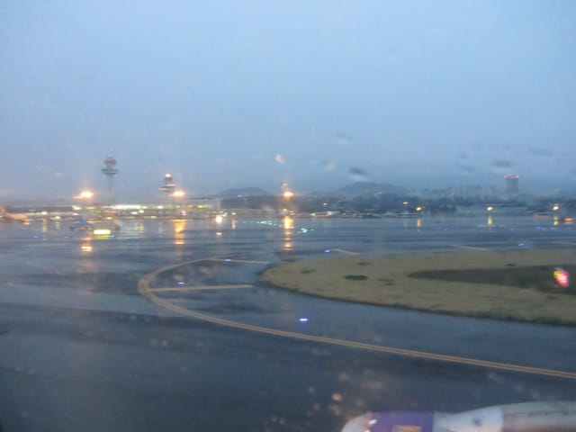
很順利辦理了入境手續。因為沒有托運行李, 所以不用到運輸帶等候, 走進1F入境大堂, 只是早上六時四十五分。
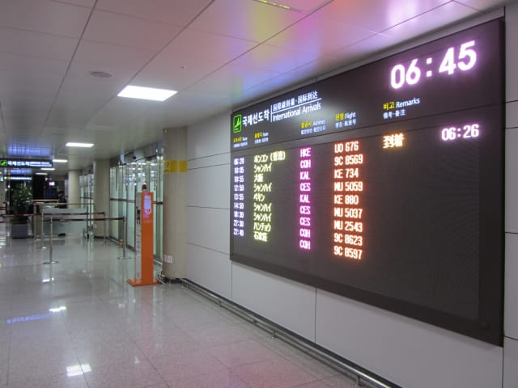
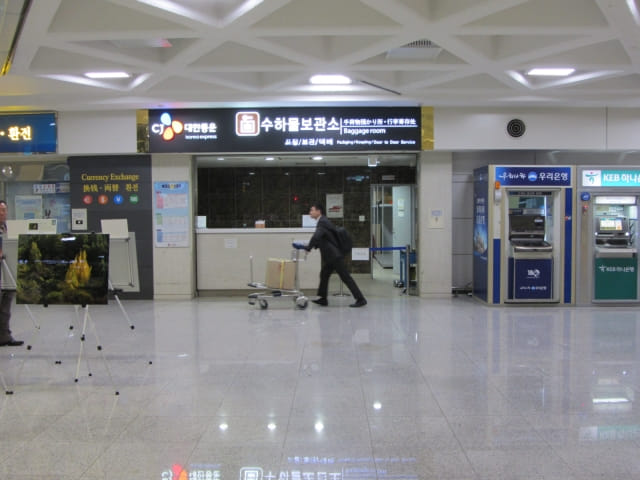
機場大樓 Food Court 吃早餐
原本打算在機場大堂的銀行或找換店兌換韓元, 可能太早, 全部尚未營業, 還是吃完早餐才兌換吧。幸好身上有少量韓元, 足以應付一些開支。接著乘手扶電梯往機場大樓4F餐飲區的 Food Court 吃早餐, 我叫了一客拉麵、飯團套餐, 她叫了一客烏冬、飯團套餐, 每個套餐都是7,000韓元。
取了食物, 才想起韓國的所謂拉麵, 其實是即食麵, 即是公仔麵! 我早餐和午餐都不可以吃即食麵, 會馬上拉肚子的, 便和她對調了。不過拉麵也太辣了, 看見她猛流鼻水。
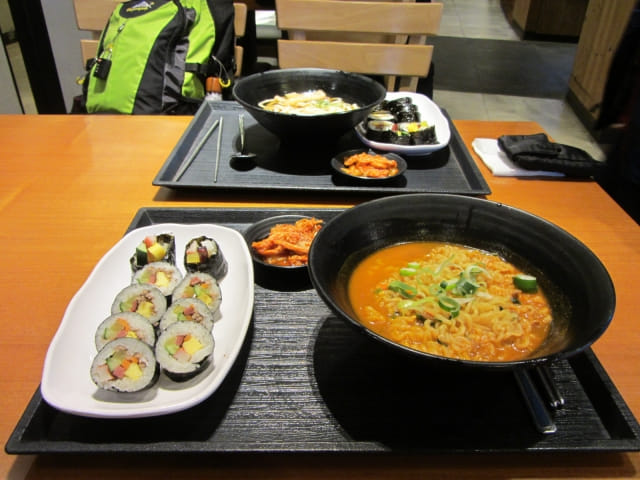
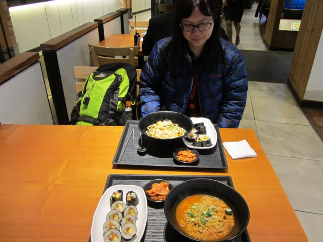
機場大堂的銀行和找換店早上九時才營業
吃完早餐, 乘手扶電梯返回1F, 大堂內的銀行和找換店仍然全部還未營業, 這回可心急了! 問了旅客咨詢中心的職員, 方知道銀行和找換店早上九時才開始營業! 望望手錶, 約早上七時四十分, 沒可能在這裡呆等個半鐘, 還是到市區才兌換吧。
這次終於買了 T-money 卡 以為乘車會方便一些
因巴士是這旅程的主要交通工具, 為了方便一些, 所以便決定在大堂的 GS25 便利店每人買一張 T-money 卡。T-money 卡每張是2,500韓元, 接著我們並為每張充值了10,000韓元, 應該可以應付今明兩天的車資。按出發前的計劃, 我們會在機場為 T-money 卡一次過充值旅程估計所需的車資, 幸好銀行和找換店還未營業, 沒有韓元, 否則…….!
來了韓國那麼多次, 一直都沒有買 T-money 卡, 主要擔心並不普及, 和使用不便, 經過這旅程後, 證實以往不買 T-money 卡是絕對正確的決定!
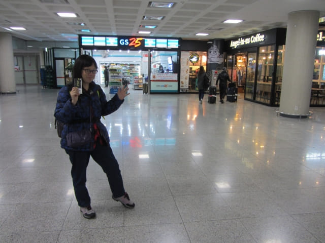
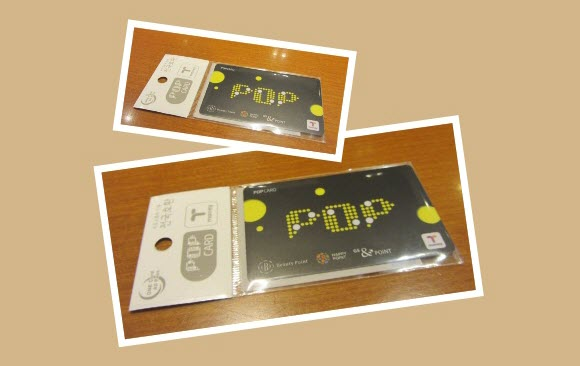
乘600號豪華機場巴士往中文區
接著是往我們這旅程的第一間下榻酒店。我們在濟州島的第一個停留城市是中文區, 可以乘600號豪華機場巴士前往。
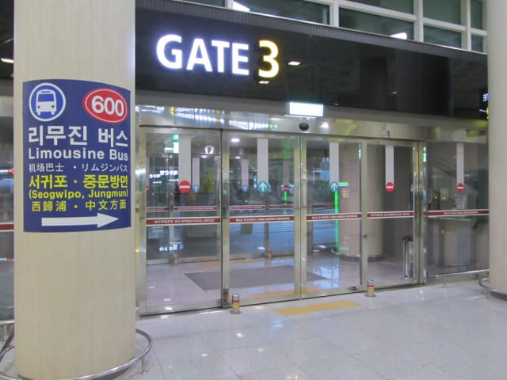
按標示從5號出口走出機場大堂, 已經有一輛600號豪華機場巴士停靠在出口前, 十分方便。
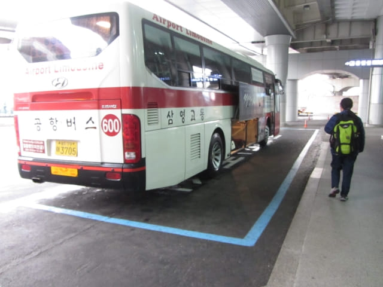
登上車廂。買了 T-money 卡, 當然要試用啦! 我先上車, 首先告訴車長我們往中文區, 拍完卡, 便進入車廂內。還沒坐下來, 聽到車長在喊, 表示要我再拍卡! 什麼? 剛才不是已經付了錢? 正想走回拍卡, 車長看見她也有 T-money 卡, 便向我馬上表示 OK, 接著她一連拍了幾次, 都好像不成功, 最後車長表示 T-money 卡儲值不足! 不是嗎? 明明每張卡剛剛充值了10,000韓元, 車資每位只是4,500韓元!
正十分疑惑之際, 車長又叫她再拍卡, 這次好像成功了; 接著又叫我走來再拍卡, 這次又好像成功了! 這時才知道, 原來剛才車長打算用她的 T-money 卡支付兩個人的價錢! 不是嗎? 如果我們不是夫婦, 那便要記帳, 可真麻煩呢! 其實往後也有幾次同樣的情況! 而且, 發覺 T-money 付款感應器十分遲鈍, 往往要拍幾次, 可能我的聽覺不好, 好像聽不到成功付款後的「嘟」聲的, 真恐怕多付車資。
但是, 兩個人的車資只是 9,000韓元, 她的 T-money 卡也應該足夠支付的! 莫非剛才在便利店充值時出現問題? 也太大意了, 應該充值後馬上要求查詢餘額的。
坐下來不久, 另一位職員給了我們兩張車票。
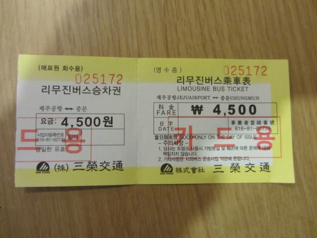
巴士約在早上八時十分緩緩駛離濟州國際機場。
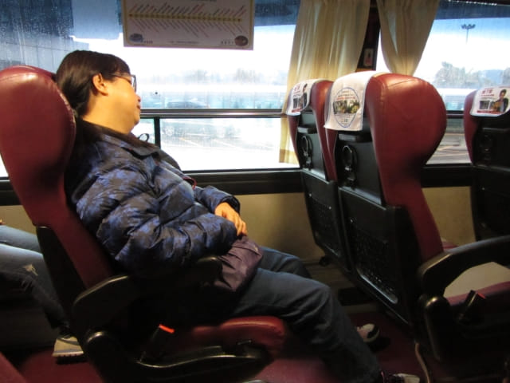
濟州島 中文區
沿途交通十分暢通, 巴士於早上九時抵達中文區的如美植物園 (여미지식물원 Yeomiji Botanical Garden) 巴士站, 車程約五十分鐘。下了車, 正下著大雨, 風勢也頗大, 馬上匆匆撐起雨傘, 雙手左搖右擺, 恐怕弄濕相機, 很困難才勉強拍攝到一張照片, 但相機鏡頭已經雨點斑斑, 不禁令人有些氣餒。
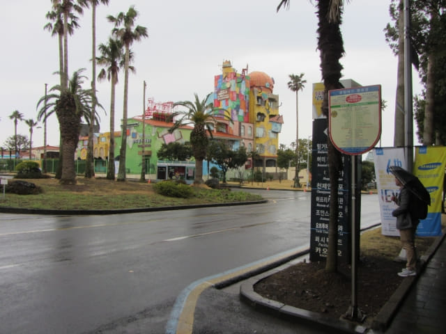
濟州中文區宿 本暱客雅酒店 – 中文 (Benikea Jungmun Hotel)
我們在中文區宿 本暱客雅酒店 – 中文 (Benikea Jungmun Hotel)。本暱客雅酒店 – 中文離如美植物園巴士站不遠, 估計步行約十五分鐘。

走過馬路, 沿如美植物園外圍走。
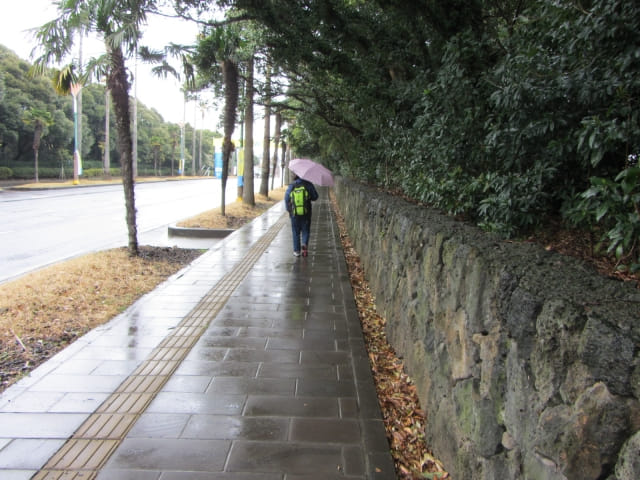
來到一個十字路口, 左邊馬路對面的風車上寫有「歡迎中文觀光」的大字, 已經可以肯定有很多中國人來這裡旅遊。
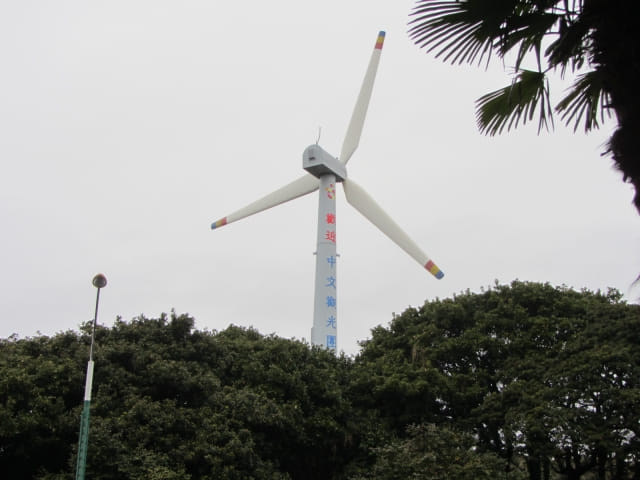
在十字路口轉右走, 馬路對面都是一間接連一間的餐廳, 看來頗為高級的。也倒是, 那麼多中國內地遊客來, 大部份食肆自然改裝成高級餐館, 以滿足他們「豪」的氣焰。中國民族何時從樸素謙卑轉變成這樣, 也許, 財富和權勢才可以考驗人的真正本性。
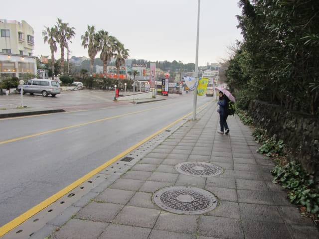
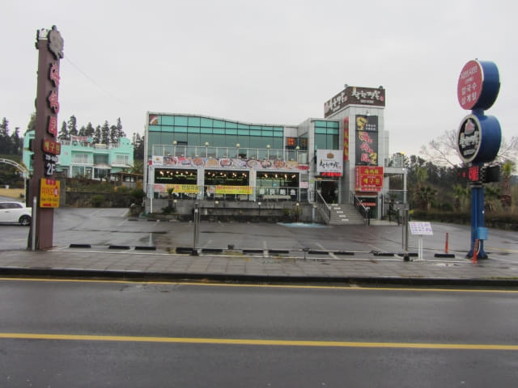
走了一會, 路旁都是一株一株的櫻花, 看清楚, 枝上的花蕾還是很細小和青綠色的, 估計離開花起碼還有十天。不是嗎, 出發前明明說西歸浦的櫻花在三月二十一日開始開花, 今天已經是三月二十三日, 半朵櫻花的蹤影也沒有! 心裡馬上一沉, 看來濟州島賞櫻這計劃極有可能遭遇滑鐵盧。唉! 又是這一句: 「謀事在人, 成事在天」, 只是想不到, 竟然相差那麼大!
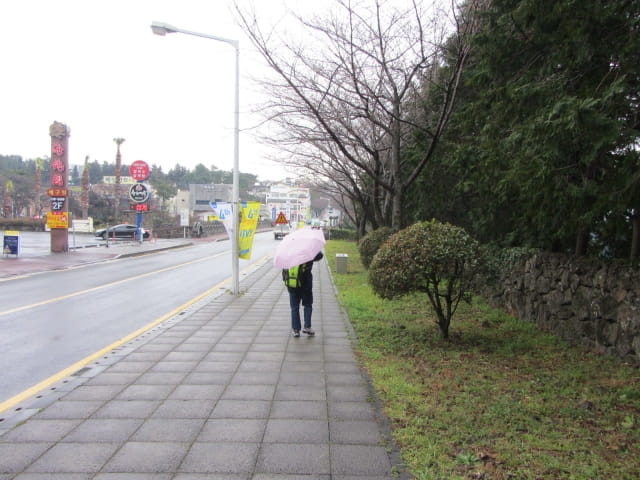
再向前走一會, 來到天帝橋 (천제교)。腳下便是天帝淵第一段瀑布。
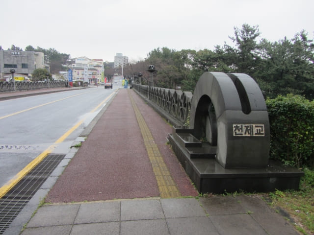
望望天帝淵第一段瀑布上游的中文川 (중문천), 差不多接近乾涸, 今天應該看不到壯觀的瀑布了。
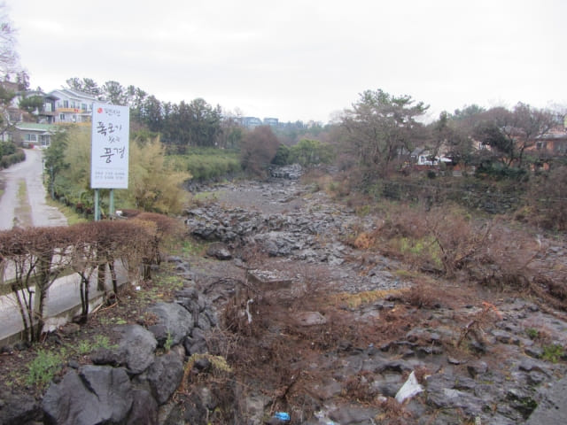
再望望天帝淵第一段瀑布下游, 涓滴流水, 第二段及第三段瀑布應有少許「睇頭」吧!
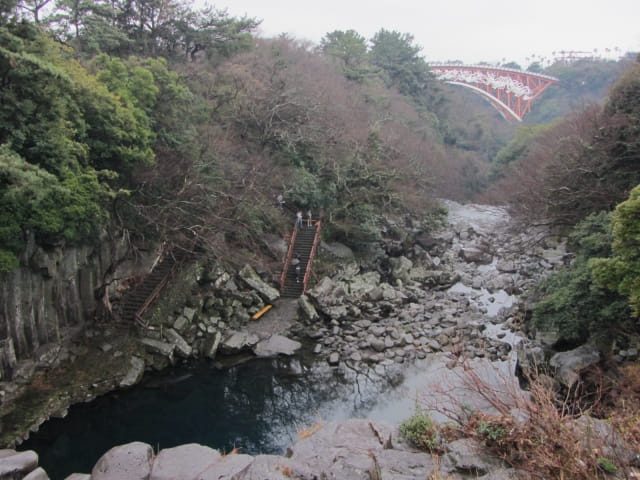
來到天帝淵瀑布的入口。
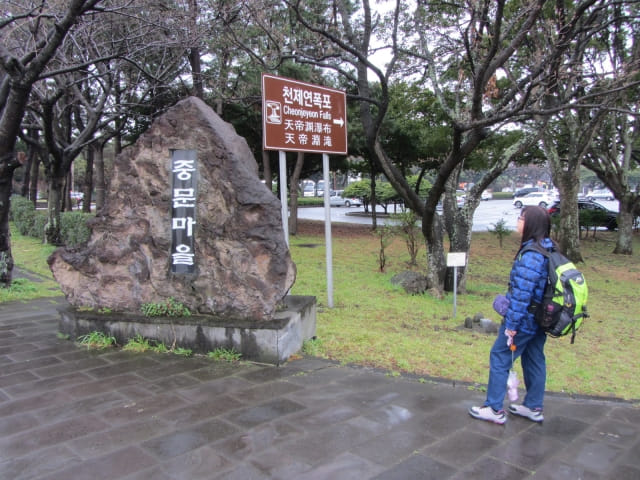
濟州島本暱客雅酒店 – 中文 (Benikea Jungmun Hotel)
再往前走一會, 經過一間消防局, 本暱客雅酒店 – 中文就在前面, 一間質素很好的酒店。
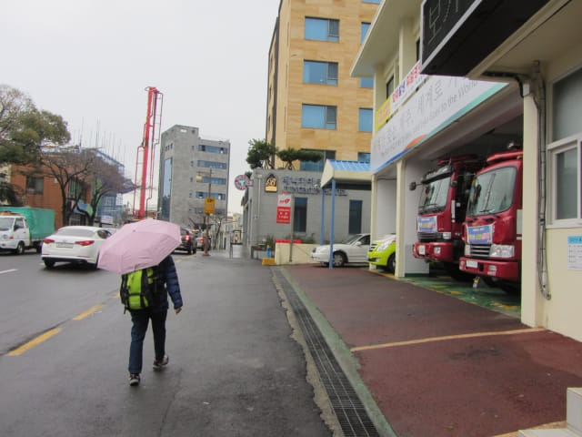

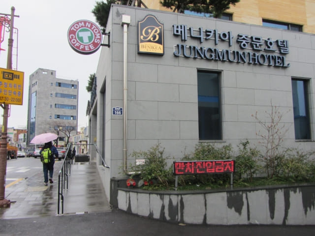
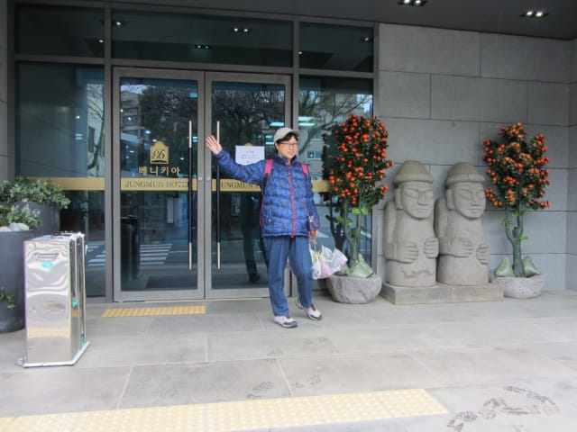